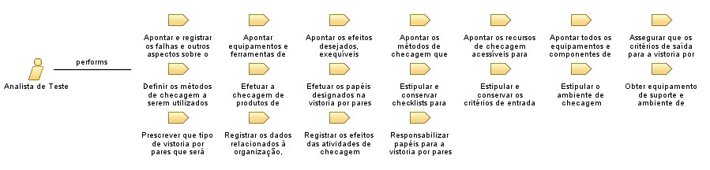

Role: Analista de Teste
Relationships

Primary Performs
Apontar equipamentos e ferramentas de checagem
Apontar e registrar os falhas e outros aspectos sobre o produto de trabalho
Apontar os efeitos desejados, exequíveis tolerâncias autorizadas na verificação e outros critérios para atender os critérios
Apontar os métodos de checagem que estão acessíveis para utilização
Apontar os recursos de checagem acessíveis para reaproveitamento e remodelação
Apontar todos os equipamentos e componentes de ambiente precisos para segurar a checagem
Assegurar que os critérios de saída para a vistoria por pares estão sendo entregues
Definir os métodos de checagem a serem utilizados para cada produto de trabalho escolhido
Efetuar a checagem de produtos de trabalho contra seus critérios
Efetuar os papéis designados na vistoria por pares
Estipular e conservar checklists para assegurar que os produtos de trabalho sejam revisados de forma eficaz
Estipular e conservar os critérios de entrada e saída para a vistoria por pares
Estipular o ambiente de checagem
Obter equipamento de suporte e ambiente de checagem, tais como equipamentos e software de teste
Prescrever que tipo de vistoria por pares que será executada
Registrar os dados relacionados à organização, execução e efeitos das inspeções por pares
Registrar os efeitos das atividades de checagem
Responsabilizar papéis para a vistoria por pares
Modifies
Artefato com os critérios de checagem e efeitos desejados
Artefato de critérios para o ambiente de checagem
Artefato de equipamentos, softwares e ferramentas de checagem fundamentais para montagem do ambiente de checagem
Artefato de recursos de checagem acessíveis para reaproveitamento
Artefato que cataloga os tipos de inspeções e os critérios de entradas e saídas desejados
Artefato que cataloga os tipos de inspeções e os critérios de entradas e saídas desejados e checklist de veracidade
Artefato que catalogue os tipos de inspeções por pares que serão feitos
Artefato que descreve qual método será utilizado para checagem
Catálogo de produtos a serem checados
Catálogo de todos os métodos exequíveis para checagem
Process Usage
ProcessoTrabalho2
>
SP 1.1 Eleger Produtos de Trabalho para Checagem
>
Analista de Teste
ProcessoTrabalho2
>
SP 1.2 Estipular o Ambiente de Checagem
>
Analista de Teste
ProcessoTrabalho2
>
SP 1.3 Estipular Táticas e Critérios de Checagem
>
Analista de Teste
ProcessoTrabalho2
>
SP 2.1 Organizar as Inspeções por Pares
>
Analista de Teste
ProcessoTrabalho2
>
SP 2.2 Efetuar Inspeções por Pares
>
Analista de Teste
ProcessoTrabalho2
>
SP 2.3 Analisar Dados da Vistoria por Pares
>
Analista de Teste
ProcessoTrabalho2
>
SP 3.1 Efetuar a Checagem
>
Analista de Teste